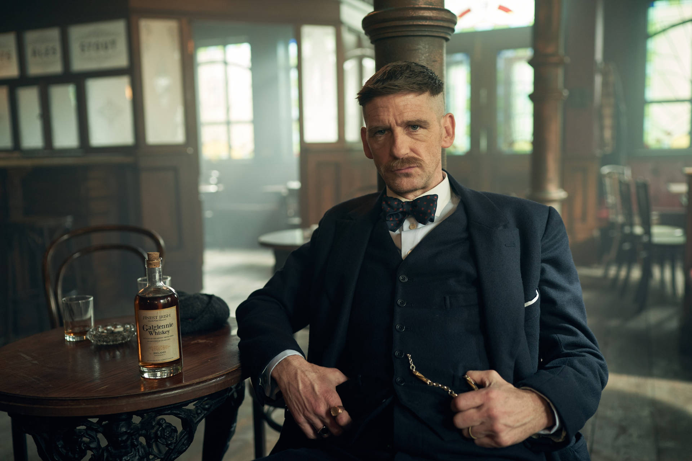

Arthur Shelby

Arthur Shelby est un homme brisé qui est toujours à la recherche de lui-même et de sa place au sein de la famille. Il est violent, impitoyable et imprévisible. En revanche, il essaie toujours de répondre aux attentes de sa famille et est extrêmement loyal envers les Peaky Blinders.